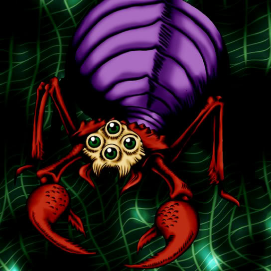

Ganigumo

Description: "Able to move and attack without triggering an opponent's TRAP (LR)."
STATS
ATK: 600
DEF: 800DECK COST
Deck Cost per Card: 19EFFECT NOT IMPLEMENTED
Fusion List (5 Possible Fusions)
- Ganigumo + Armed Ninja = Cockroach Knight
- Ganigumo + Kuwagata α = Kwagar Hercules
- Ganigumo + M-Warrior #2 = Cockroach Knight
- Ganigumo + Masked Clown = Cockroach Knight
- Ganigumo + Queen's Double = Cockroach Knight